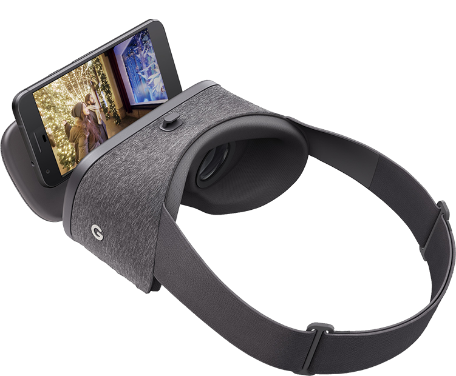
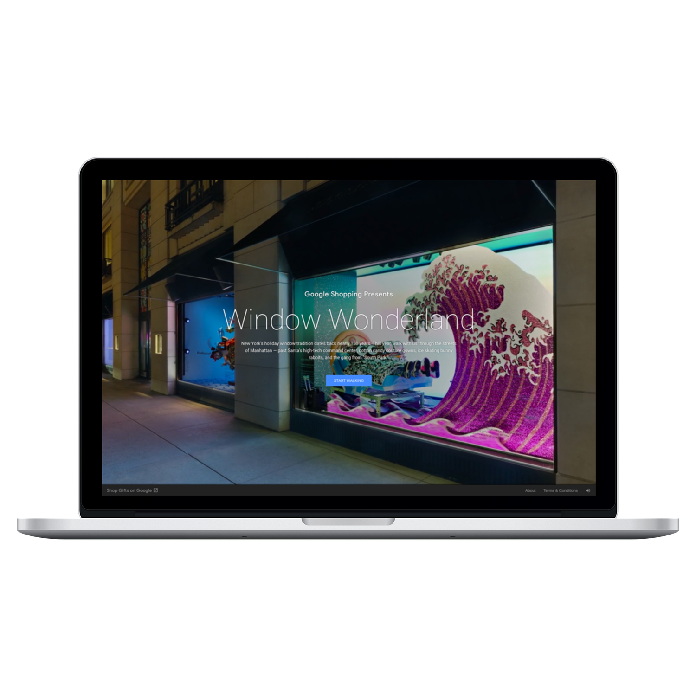
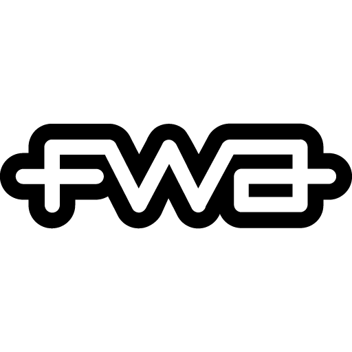

WINDOW WONDERLAND
ACD, Art & UX: Alexander Christian
ECD: Eric Lohman
CEO & ECD: Drew Ungvarsky
Creative Director, Writer: Omar Silwany
GROW in partnership with Google Art, Copy & Code
Window Wonderland :60




Case Study :120
"Google's 'Window Wonderland' Brings New York's Holiday Retail Extravaganzas To The Web"
"Thanks to Google, You Can Now Take a VR Tour of New York's Holiday Window Displays"
"See all of New York's extravagantly designed holiday windows using Google VR"
RECOGNITION

THE CHALLENGE
For 150 years, New York's holiday windows existed in one place, for one season, for those who could make the journey. Five million people annually crowd Fifth Avenue sidewalks to see them. The spectacle was exclusive by geography. Google Shopping wanted to democratize the experience — to bring these windows to the world.
THE INSIGHT
Windows aren't just displays. They're portals. Retailers spend millions creating worlds behind glass — fantasy, craft, imagination compressed into a few feet of storefront. But most of the world never sees them. What if we could turn those portals into passages anyone could walk through?
THE WORK
We partnered with 18 of New York's most iconic retailers to capture their 2017 holiday windows in virtual reality. Each window became an immersive VR experience, accessible to anyone with a browser, smartphone, or VR headset. The platform launched globally in December 2016, turning a New York tradition into a worldwide cultural moment.
THE IMPACT
FWA Site of the Day. Awwwards Site of the Day. 2017 Webby Awards Honoree. Featured in Fast Company, Adweek and Mashable. Windows became wonderlands. And wonderlands became limitless.